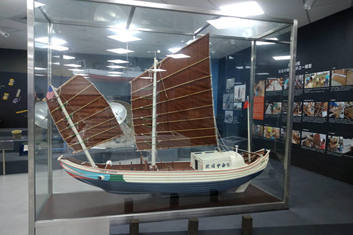

The exhibition brings us back to Taiwan with a reproduction of the Qing Dynasty era "Map of Taiwan and the Penghu Archipelago." By examining this map from the reign of the Yongzheng Emperor, the differences between past official positions and our current awareness of Taiwan become clear. The introduction of precision measuring instruments and graphic sciences led to the printing of more accurate maps. Aerial photography and satellite images followed to provide accurate color images. Before the age of flight, however, mapmakers limited to views from the ground and simple instrumentation had to use their imaginations to fill in knowledge gaps. Choices made about what information to gather was vital, with priority given to requests from rulers. The "Map of Taiwan and the Penghu Archipelago" looks at Taiwan from the perspective of the mainland China. While it lacks the accuracy of modern maps, which typically adopt a bird’s eye view perspective, the drawing style and subjective presentation represent the custom-made nature of ancient maps, highlighted by the inclusion of select natural landscapes, military installations, and everyday lifestyle scenes. A modern 3D model of Taiwan is included for comparison to help viewers look for familiar sights to see how ancient perspectives differ from the present-day state of the land.
The 1st to 5th year of the reign of Yongzheng (1723-1727)
Long hand scroll, Colors on paper, 772 x 63 cm
This traditional, hand drawn map features natural landscapes on a long handscroll. Oriented with east located on top, the map shows both Taiwan and the Penghu Archipelago. On the far right of the Taiwan section is Eluanbi and on the left side is Mianhua Islet. The map shows mountain ranges, rivers, lakes, harbors, islands and other natural landscape elements, as well as indigenous tribal communities and Han settlements. County seats, government offices and military installations are also indicated. The cardinal directions are marked around the Penghu Archipelago, and on the lower right corner is the note: "To the east is Taiwan, to the west is Xiamen, to the south is the open sea, and to the north is the inland." A label at the bottom center shows "Penghu Channel," and the map viewpoint shifts: The northern upper section is shown from a south to north perspective (most of the characters are written from east to west) and the southern bottom section is shown from a north to south perspective. The map depicts 44 islands, harbors, villages, government offices and military installations.
Perhaps the most interesting feature of the map is the large body of water shown in northern Taiwan. Ferry crossing points to the east and west support ship passage. At the south of tribal communities Tagara, there is a label stating that large vessels can be docked. Shoreside zones that are identified including ancient names Ki-lrigan, Mashaoweng, and ancient areas that closely align with present-day Shilin, Jinshan, and Guandu. The topographical features are similar to those contained in Yu Yonghe’s "Small Sea Travel Diaries," which led some scholars to hypothesize that a body of water called "Kangxi Taipei Lake" once existed. Using GIS data, the author simulated flooding of the Taipei Basin and found that a lake with similar contours emerges when the basin water depth reaches 5 meters. Land subsidence caused by a large earthquake in 1694 may have created the lake.

Free China Traditional Chinese Sailing Junk
Model made by Mr. Hong, Quan- Rui
250 x 50 x 210 cm
Made to a scale of 1:10
Before a trans-Atlantic sailing race that would hold its 125th competition on June 11, 1955, a group of six young adults: Paul Chow, Marco Yu-lin Chung, Reno Chia-lin Chen, Benny Chia-cheng Hsu, Hu Loo-chi, and the vice consul of the US consulate in Taiwan, Calvin E. Mehlert, found a traditional Chinese sailing junk that had been built in the late 19th century in Mawei, Fuzhou. They decided to acquire the boat, with the goal of sailing it to the United States to enter the race. Their idea stirred up a lot of excitement and garnered sponsorships from government offices and others. Among the supporters was Taiwan Province Governor Yen Chia-kan, who named the boat "Free China."
On April 4, 1955, Free China set sail from Keelung. With its progress disrupted by a typhoon and stoppages for repairs, after 114 arduous days it finally arrived in San Francisco. The crew missed the race, but they completed the first trans-Pacific journey by an ROC-sailboat without motive power.
In 2009, Free China was rediscovered. Old and worn out, it faced imminent destruction. After widespread appeals and efforts, however, the historic ship was saved and brought back to Taiwan.
Led by the Ministry of Culture, the National Museum of Marine Science and Technology gathered experts to restore the ship. It is currently on display at National Taiwan Ocean University.
Conclusion
The stories told by Imagining the World represent how humans acquire knowledge and use aesthetic methods to create records. The exhibition underscores the museum’s diverse collection and the cultural importance of its artifacts to mankind. Over the course of history, people have leveraged their imaginations and technological progress to make marvelous achievements. Countless artistic masterpieces explore the wonders of the universe while examining the scientific and technological advances that support human civilization. Knowledge and art that has been accumulated since ancient times influences people to this day. Imagining the World hopes that people can be moved in ways that encourage them to use an open mind and a limitless imagination. Sometimes, a little bit of creativity can become a seed that spreads, inspiring the next scientist who changes people’s lives or an artist who preserves memories for posterity in beautiful ways.